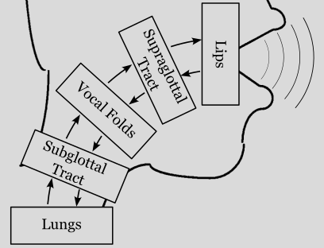
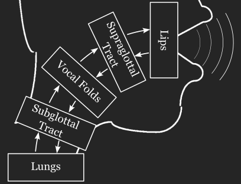

pyLeTalker – Python framework for wave-reflection voice synthesis#


pyLeTalker is a Python library to synthesize (or simulate) human voice production, intended for research use. It offers flexibility to test different numerical voice folds model and to synthesize various pathologial voice. It is currently not suitable to synthesize speech.
This library started as a repackaged version of LeTalker, a Matlab GUI demo by Dr. Brad Story, and it since has been evolved as a flexible general voice synthesis library built around the wave-reflection vocal tract model. The wave-reflection vocal tract model treats the vibrating air pressure as propagating waves through the vocal tract. Some portion of the incidental wave reflects when it encounters a change in the cross-sectional area of the vocal tract.
 Please note that pyLeTalker will be perpetually in active development. As such, feedback and possibly contributions are highly appreciated. Please read the Use and Contribution section below.
Installation#
Install the pyLeTalker package via pip.
pip install pyLeTalker
Simple Examples#
The following closely reproduces the LeTalker demo’s default configuration:
import letalker as lt
fs = lt.fs # sampling rate (44.1 kHz)
T = 0.5 # simulation duration
N = round(T*lt.fs) # number of samples to generate
# define the simulation elements using the default parameter values
vf = lt.LeTalkerVocalFolds() # 3-mass vocal fold model with muscle activation
vt = lt.LeTalkerVocalTract('aa') # supraglottal vocal tract to produce /a/
tr = lt.LeTalkerVocalTract('trach') # trachea / subglottal tract
lp = lt.LeTalkerLips() # Ishizaka-Flanagan lip model
lg = lt.LeTalkerLungs() # constant lung pressure
# run the simulation
pout, res = lt.sim(N, vf, vt, tr, lg, lp)
# pout - radiated sound pressure signal (a 1D NumPy Array)
# res - a dict of Results objects of all the simulation elements
The above script synthesizes an /a/ vowel sustained for 0.5 second of phonating /a/
approximately at \(f_o\approx\) 100 Hz. lt.sim() is the basic simulation function,
and it is equipped with the default arguments so the above example can be shortened
to
# only need to define the vocal folds element
vf = lt.LeTalkerVocalFolds() # 3-mass vocal fold model with muscle activation
# run the simulation with default subglottal tract, lips, and lungs elements as
# well as the supraglottal tract with the specified vowel (/a/ in this case)
pout, res = lt.sim(N, vf, 'aa')
The kinematic vocal fold model (KinematicVocalFolds) is a potent vocal fold
model to provide more predictable outcomes, especially $f_o$, by trading off the
interaction between the glottal flow and glottal area for programmable vocal fold
geometry and motion.
fo = 100 # fundamental frequency in Hz
# define the simulation elements
vf = lt.KinematicVocalFolds(fo) # 3-mass vocal fold model with muscle activation
# run the simulation
pout, res = lt.sim(N, vf, 'aa')
The kinematic vocal folds get their own simulation function for convenience:
pout, res = lt.sim_kinematic(N, fo, 'aa')
Use and Contribution#
The development and documentation of pyLeTalker is heavily biased towards the current research interests of the active developers. This project is offered as open-source to attract other voice researchers to get involved even just to use the library.
If you are interested in using pyLeTalker but unsure of how to use it, please post your interest on [the Discussion board](tikuma-lsuhsc/pyLeTalker#discussions) or email me. I will help you setting up your script. This will help refining the available-but- not-yet-used features (both debugging and documentation) or adding new features that are not currently included.
If you are a Python programmer/researcher and encountered a bug or needing a new feature, please post on [the Issues board](tikuma-lsuhsc/pyLeTalker#issues), and I’ll be happy to discuss the prospect. I will accept [pull requests](tikuma-lsuhsc/pyLeTalker) but only after reviewing their values and qualities.
Contents
- Examples
- Generating dysphonic voice samples with kinematic VF model
- Plotting synthesized signals
- Playing and saving synthesized acoustic signals
- Python classes to model various
Elements of Voice Production Mechanism letalker.function_generatorsTaperMixin- Controlling onset and offset of functions- Animating kinematic vocal folds
- Citation Guidelines
- API Reference